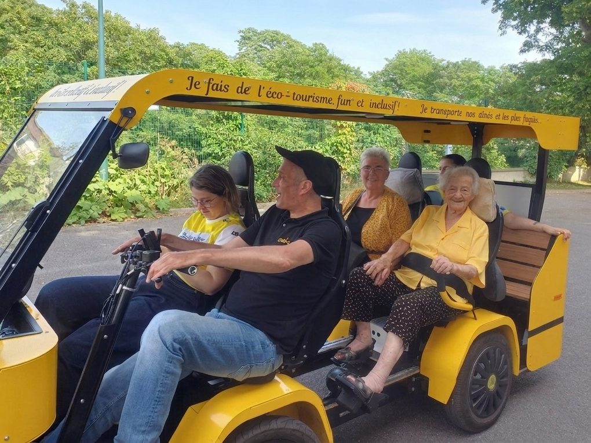

Quatre pédaleurs actifs
La configuration de référence en EHPAD et en résidence : on pédale ensemble, chacun à son rythme.
À bord
Jusqu’à 4 adultes actifs, +3 enfants ou +1 adulte sur voie privée.
Vitesse
25 km/h maximum, assistance coupée au-delà.